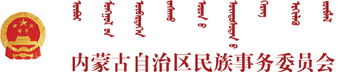

现在蒙古语分为新蒙古语和传统蒙古语两种。蒙古国主要使用新蒙古语，上世纪出创建。中国的内蒙古自治区主要使用传统蒙古语，创建至今已800多年。

此平台教授传统蒙古文，上面例图为传统蒙古语的手写样式，平台所有蒙古语内容都将以此手写体为标准显示。
蒙古语（蒙文：ᠮᠣᠩᠭᠣᠯ ᠬᠡᠯᠡ，西里尔：монгол хэл）属阿尔泰语系蒙古语族，主要用者在中国蒙古族聚居区、蒙古国和俄罗斯联邦西伯利亚联邦管区。
蒙古国现在使用的蒙古语因在二十世纪五六十年代受前苏联影响主要使用西里尔字母拼写，俄罗斯的卡尔梅克语、布里亚特语被视为蒙古语的方言[1]。
中国蒙古语的使用因环境影响和对语言结构要求严谨，造成现在大部分年青蒙古族渐渐不再使用母语交流，传承受到严重影响。
语法是黏着语的蒙古语在语音方面有严格的元音和谐律，即按照元音舌位前后或圆唇不圆唇进行和谐，如在一个词里，要么都是后元音（阳性元音），要么都是中元音（阴性元音）。但是前元音（中性元音）与后元音或中元音均可出如今同一个词里。在形态学方面以词根或词干为基础，后接附加成分派生新词和进行词形变化；名词、代词、形容词、数词、副词、后置词和形动词，都有人称、数或格的语法范畴；动词都有时、体、态、式等语法范畴。在结构学方面，句里语序有一定的规律。通常主语在前，谓语在后，修饰语在被修饰语之前，谓语在宾语之后。蒙古语大约产生于9～10世纪，语言学家认为与中古的契丹语相似，达斡尔语、保安语等语言同蒙语有亲缘关系；有很多方言，主要分为中部方言、西部方言（卫拉特语）、北部方言（布里亚特语）和东部方言（科尔沁-喀喇沁）。
《随心蒙古语》传统蒙古语学习平台是一个由“内蒙古民族事务委员会”选题、“内蒙古阿儿含只文化有限责任公司”承编的网络教程。


《随心蒙古语》是按《使用蒙古语文资格考试标准》编写的，所以本教程也可以当做使用蒙古语文资格考试辅导班的一种教材。
上面例图为传统蒙古语的手写样式，我们平台所有蒙古语内容都将以此手写体为标准显示。
蒙古语（蒙文：ᠮᠣᠩᠭᠣᠯ ᠬᠡᠯᠡ，西里尔：монгол хэл）属阿尔泰语系蒙古语族，主要用者在中国蒙古族聚居区、蒙古国和俄罗斯联邦西伯利亚联邦管区。
蒙古国现在使用的蒙古语因在二十世纪五六十年代受前苏联影响主要使用西里尔字母拼写，俄罗斯的卡尔梅克语、布里亚特语被视为蒙古语的方言[1]。
中国蒙古语的使用因环境影响和对语言结构要求严谨，造成现在大部分年青蒙古族渐渐不再使用母语交流，传承受到严重影响。
语法是黏着语的蒙古语在语音方面有严格的元音和谐律，即按照元音舌位前后或圆唇不圆唇进行和谐，如在一个词里，要么都是后元音（阳性元音），要么都是中元音（阴性元音）。但是前元音（中性元音）与后元音或中元音均可出如今同一个词里。在形态学方面以词根或词干为基础，后接附加成分派生新词和进行词形变化；名词、代词、形容词、数词、副词、后置词和形动词，都有人称、数或格的语法范畴；动词都有时、体、态、式等语法范畴。在结构学方面，句里语序有一定的规律。通常主语在前，谓语在后，修饰语在被修饰语之前，谓语在宾语之后。蒙古语大约产生于9～10世纪，语言学家认为与中古的契丹语相似，达斡尔语、保安语等语言同蒙语有亲缘关系；有很多方言，主要分为中部方言、西部方言（卫拉特语）、北部方言（布里亚特语）和东部方言（科尔沁-喀喇沁）。